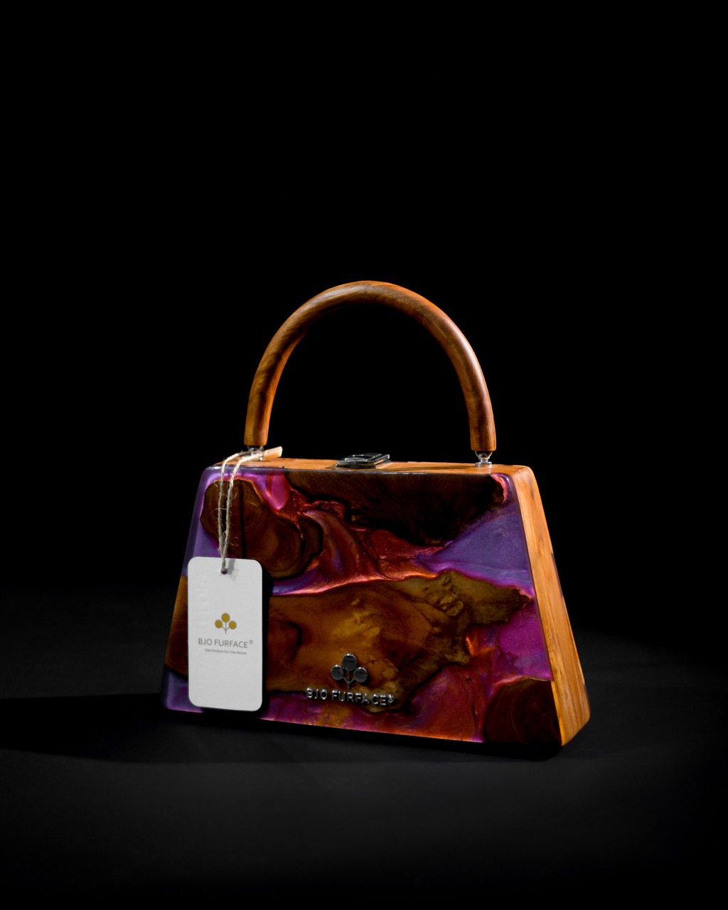
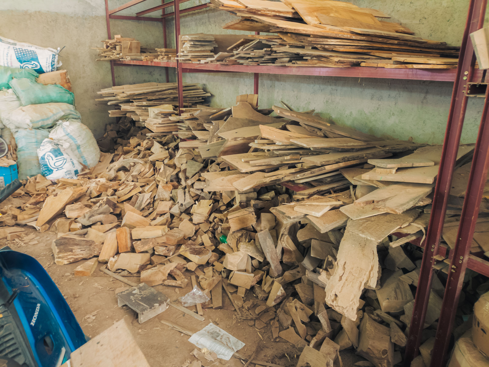
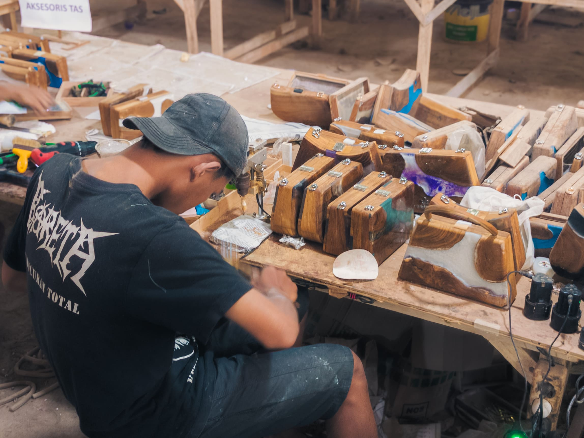

Bjo Furface / Batang, Indonesia
Tak ada dua
yang serupa.
Limbah jati, resin, dan tangan pengrajin lokal menjadi karya yang hanya punya satu pemilik.
Jelajahi karya
Katalog Terverifikasi
Pilihan Karya
Unggulan
Tas Kayu
Pemba Abstrack
Rp2.399.000
Unggulan
Tas Kayu
Lucia Island New Natural
Rp2.399.000
Eksplorasi Kategori
Koleksi Bjo Furface
Berawal sejak 2017 di Desa Kemiri Barat, Batang, Bjo Furface mengolah potongan limbah kayu jati menjadi karya fungsional yang membawa karakter serat alami berbeda untuk setiap pemiliknya.
Baca cerita lengkap kami
Filosofi Kriya
Satu Potongan Kayu, Satu Karakter Utuh
Setiap alur serat kayu jati dan aliran resin memiliki pola yang terbentuk secara alami selama pengerjaan manual oleh pengrajin lokal kami. Prinsip ini melahirkan identitas One Product For One Person pada setiap tas, jam, maupun perlengkapan saji yang dihasilkan.
Pelajari Keunggulan
Di Balik Workshop
Buka galeri dokumentasi
Dari Limbah Jati Menjadi Karya


